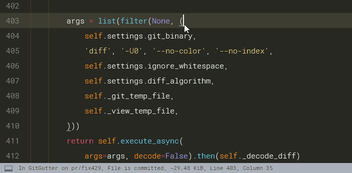
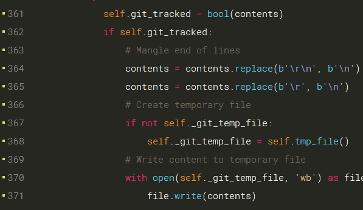

Overview
A Sublime Text plug-in to show information about files in a git repository:
- Gutter Icons indicating inserted, modified or deleted lines
- Diff Popup with details about modified lines
- Status Bar Text with information about file and repository
and provides some commands like:
- Goto Change to navigate between modified lines
- Copy from Commit to copy the orignial content from the commit
- Revert to Commit to revert a modified hunk to the original state in a commit
Gutter Icons & Status Bar Text

The icons of the default theme have the following meaning:
| Icon | Description |
|---|---|
| inserted line | |
| modified line | |
| deleted region borders | |
| ignored file | |
| untracked file |
Diff Popup
The diff popup shows the orignal content from the commit or the differences between it and the working content.
ⓘ requires Sublime Text 3 Build 3124+ and mdpopups 2.0.0+

The toolbar provides some commands to interact with or modify the changes.
| symbol | meaning of the symbol |
|---|---|
| × | close the popup |
| ⤒ | goto to first change |
| ↑ | goto to previous change |
| ↓ | goto to next change |
| ≈, ≉ | enable/disable difference highlighting |
| ⎘ | copy the orignial content from the commit |
| ⟲ | revert a modified hunk to the original state in a commit |
To learn about how to show the diff popup and to use those commands directly please refere to the Basic Usage section.